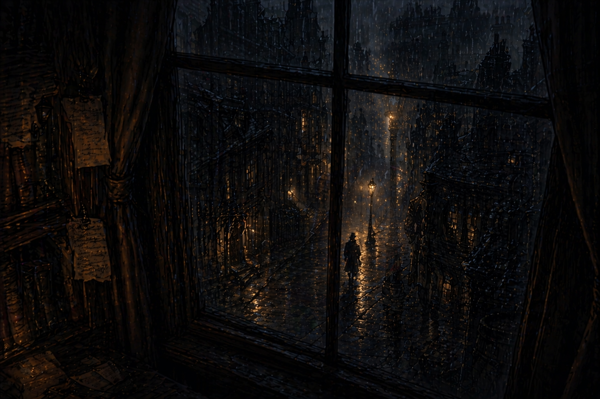
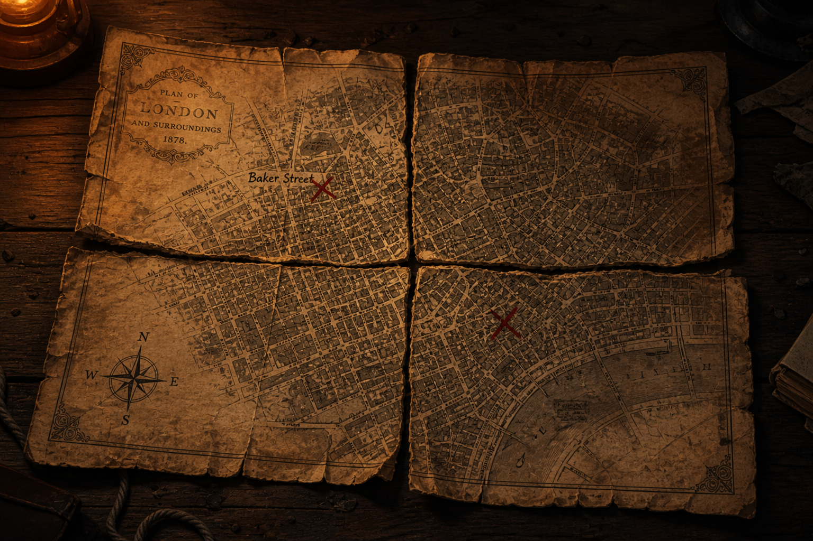

Der letzte Fall
Bitte verifiziere dich!

Bitte verifiziere dich!
Im Labor wurde etwas verschoben, bevor du ankamst. Die Spuren lügen nicht, aber sie sagen auch nicht alles.
Halte dich an das, was sichtbar ist. Der Rest ergibt sich nur, wenn du den Raum wirklich liest.
Etwas an den ersten Spuren passt nicht zusammen. Im nächsten Raum hat jemand die Antwort nicht versteckt, sondern verteilt.
Vier Teile liegen am Boden. Keine Markierungen, keine Hinweise, nur der Raum selbst.


Wähle Buchstaben in der richtigen Reihenfolge. Die Maschine zeigt dir nur eine Spur, vielleicht absichtlich gelegt.
Fortschritt: _ _ _ _ _ _ _ _ _
Zu viele Zeichen. Achte auf ein bekanntes Muster.
Hier siehst du alle 6 Raeume und ihren aktuellen Ermittlungsstatus.
Waehle eine aktuelle Hauptspur aus.
8 Personen stehen unter Verdacht. Die Maschine kann Hinweise liefern, aber auch in die Irre fuehren.